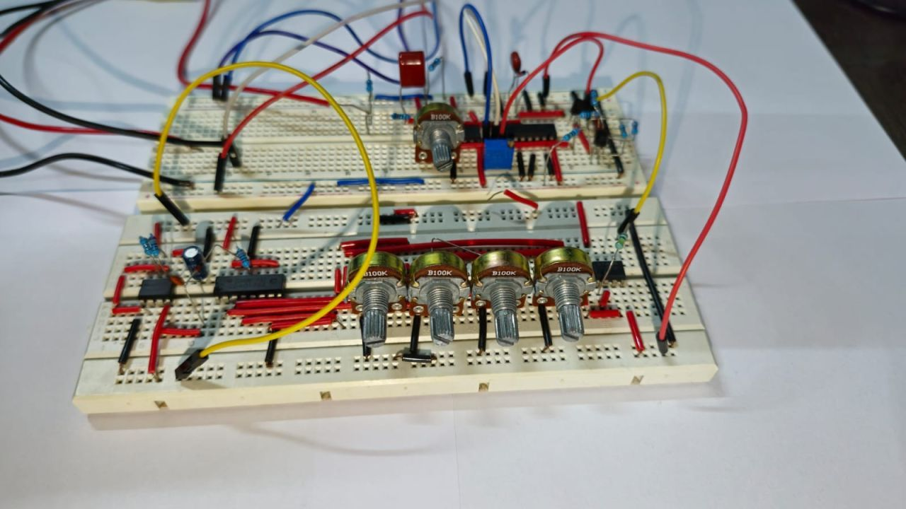

Analog Schmitt-Trigger VCO with 4-Step Sequencer
A discrete, PNP/NPN-coupled Schmitt-trigger VCO built on breadboard, tuned to 7.12 kHz, and driven by a CD4017-based 4-step pitch sequencer. Being my very first foray into discrete analog electronics, I followed Moritz Klein's "Shapes VCO" methodology stage by stage, only without a datasheet handing me the component values, which turned out to be most of the actual work.

Fig 1. Full two-board breadboard build: The sequencer step pots on the left, oscillator core bottom right.
Context & Objective
This project started as a project for my Analog Electronics coursework, but I knew from the start that I wanted to build a circuit using discrete components, and it had to make noise. I followed the build order of Moritz Klein's "Shapes VCO" video series almost exactly: get a Schmitt-trigger relaxation core oscillating first, replace its timing resistor with an NPN transistor to make the charge curve exponential (so control voltage maps onto pitch the way a real synth expects), buffer the output so downstream loading doesn't detune the core, then add a PNP transistor thermally coupled to an NTC thermistor so the exponential stage doesn't drift as it warms up.
From there, I wanted the oscillator to actually do something musical rather than just sit on the bench holding one pitch, so I added a CD4017-based 4-step sequencer: a 555 timer clocks the decade counter, each of its first four outputs gates one of four potentiometers onto the VCO's CV input, and the result is a simple, repeating 4-note pattern with independently tunable steps.
The Reference Design
Adapting from Moritz Klein's "Shapes VCO" schematic, I built the circuit with the parts I actually had on hand. A common constraint in DIY synth building, where a supposedly simple substitution (a different transistor, a slightly different pot value) can quietly move your operating point. The core uses two TL074 op-amps, a diode network, and a 2.2nF timing capacitor feeding the Schmitt-trigger stage, with coarse, fine, CV, and FM pots each summing into the same timing node through their own resistor pairs.
 Fig 2. Reference schematic followed for the oscillator core (Moritz Klein, "Shapes VCO").
Fig 2. Reference schematic followed for the oscillator core (Moritz Klein, "Shapes VCO").
Sizing the Timing Network
The schematic fixes most values directly, but landing on a specific tuning frequency and sizing the sequencer's clock still meant working from first principles. A Schmitt-trigger relaxation oscillator's frequency follows roughly f ≈ 1 / (k·R·C), where k depends on the gate's switching thresholds relative to its supply, commonly cited between 0.7 and 1.4 for this device family, and varying chip to chip. With the schematic's 2.2nF timing cap, solving for R at the 7.12kHz target using the commonly-quoted average multiplier (k = 1.0) gives a best-estimate timing resistance of R = 1/(f·C) ≈ 63.8kΩ. Since the 100k coarse pot sits in series with a 10k fine trim (a 10k–110k total range), that puts the coarse pot at roughly 54kΩ, or about 54% of its rotation, with the fine trim making up the rest. The full 0.7–1.4 range for k puts realistic error bars of roughly 46kΩ to 91kΩ (about 42%–85% rotation) around that number, so ~63.8kΩ / ~54% rotation is the value to dial in first and trim from once on the bench.
The 555-based sequencer clock wasn't specified anywhere in my own notes going in, so I sized it from the standard astable formula, f = 1.44 / ((R1 + 2·R2)·C), using a fixed 1k and 68k already in the sequencer's parts stock plus one of the spare 100k pots as a tempo control and an added ~1µF timing cap. That combination sweeps roughly 4.3 Hz to 10.5 Hz, comfortably in a usable step-sequencer range, while keeping duty cycle within a hair of 50% across the whole sweep.
Proving It on Breadboard
Component shortages and a tight timeline meant I didn't build the full planned chain, and as such, the saw/pulse/triangle/sine shaping stage and a case-mounted final version are both still on the list. What is built and verified is the oscillator core, tuned and holding at its target point, and the 4-step sequencer walking it through an independently-tunable pitch pattern in real time, driven off two 9V batteries with no bench supply.
| Stage | Status | Notes |
|---|---|---|
| Schmitt-trigger core | Working | Tuned to 7.12 kHz reference point |
| NPN exponential converter | Working | CV tracking trimmed empirically |
| PNP + NTC thermal comp. | Working | Reduces drift as the board warms up |
| Output buffer | Working | Isolates timing node from load |
| 4-step sequencer (CD4017 + 555) | Working | 4 independently-tunable CV steps |
| Saw/pulse/triangle/sine shaping | Not yet built | Component shortage, time constraints |
| Speaker output (LM386) | Not yet wired | Populated in BOM, unused this revision |

Fig 3. 4-Step CV Potentiometers and Front Row Build ViewKey Insights
A Schmitt-Trigger Oscillator Doesn't Have One Fixed Formula
Gate hysteresis on CMOS Schmitt inverters varies enough, chip to chip and batch to batch, that any hand-calculated resistor value is a starting point rather than an answer. That is exactly why this whole family of circuit leans on coarse and fine pots instead of precision fixed resistors, and why the correct instinct once it's built is to verify with a scope, not to trust the math.
Exponential Tracking Is a Calibration Problem, Not a Component Problem
No resistor value on its own gets an exponential converter tracking cleanly. The 1k trimmer exists because the real fix is empirical: play a CV across a few octaves, adjust, repeat. The PNP/NTC thermal stage exists for the same reason in reverse, it keeps a good calibration from drifting away as the board warms up.
A Partial Build Can Still Prove the Concept
Skipping the full shape-generation chain left something smaller than originally planned, but it's a working, pitch-modulating oscillator that tracks a 4-step sequence in real time, which is enough to validate the design before finishing the rest.
What's Next
Next up is populating the op-amp shaping stage from the reference schematic to get saw and pulse outputs alongside the existing waveform, wiring in the LM386 for a speaker output, and eventually moving the whole thing off breadboard onto stripboard once the full chain is verified end to end.